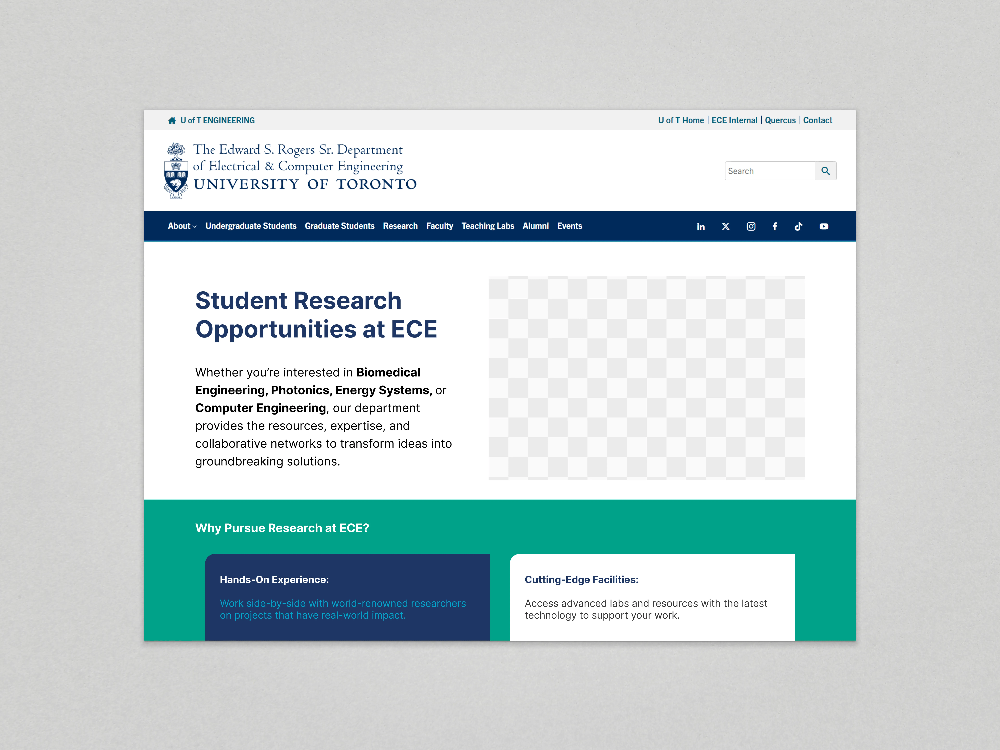

Featured Work
Website design work for ECE, University of Toronto
I helped improve ECE’s website by designing pages that support student recruitment, highlight research, and make academic info easier to find.
Responsibilities
Audited for accessibility, redesigned key pages in Figma and WordPress, updated site content with team members, and led design tasks.
Goals + Impact
Improve usability, showcase student life, and make department info easier to find.
Results
Designed and shipped key pages, improved the student user experience, and supported recruitment efforts.
 Website Redesign and Development
Website Redesign and Development
ECE Department's Home Page ↗
Live Jsanuary 2025
Focused on prospective student recruitment by prioritizing academic, research, and student life content.
Live Jsanuary 2025
Focused on prospective student recruitment by prioritizing academic, research, and student life content.
 Web Redesign and Migration
Web Redesign and Migration
Toronto Nanofabrication Centre ↗
Live March 2025
Designed and developed a landing page to migrate the TNFC into the main ECE website while preserving structure and improving clarity.
Live March 2025
Designed and developed a landing page to migrate the TNFC into the main ECE website while preserving structure and improving clarity.
 Web Redesign and Development
Web Redesign and Development
ECE Events Page ↗
Live March 2025
Reimagined the events section by adding categories, content, and layout improvements to replace the old calendar-based experience.
Live March 2025
Reimagined the events section by adding categories, content, and layout improvements to replace the old calendar-based experience.

New Web Page Design
Student Research Opportunities ↗
Live December 2024
Designed a new page to list open positions for undergraduate and graduate research assistants under the ECE Research section.
Live December 2024
Designed a new page to list open positions for undergraduate and graduate research assistants under the ECE Research section.


.png)